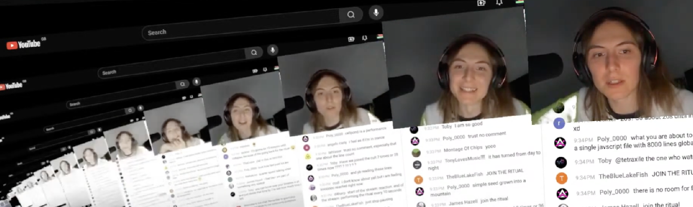
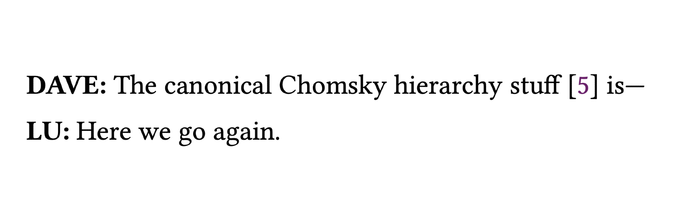

→ Click here if you've paid!
TODEPOND PONDCAST: Reaction reaction
Oh my god. It's time for—
It's been a weird week. Thank god it's the—
🐸 TODEPOND PONDCAST 🐸
What's new this week?
Reaction reaction
I did a livestream a week ago. Its premise was simple. I would react to—
Ok, a long time ago, I released a video called Spellular Automata. And recently, a tech influencer called Theo made a reaction video about it. So I decided to make a reaction video of his reaction video, and I decided to record it live, on a livestream.
But there was a twist. After doing my reaction video, which took about an hour, I then did another reaction video of reaction video of Theo's reaction video of my video. And that took about an hour as well. And then, I did it again. I did a reaction video of my reaction video of my reaction video of Theo's reaction video of my video. And that took about another hour. And this might seem crazy. Maybe it is.
During this whole time, many many people were watching. It was always over one hundred people, which was absolutely crazy for me. I couldn't believe it when this was all going on. I still can't, to be honest. It was this incredible a d special community moment, where we all got to interact in realtime. And if you missed it, you can still catch up, and see all the chat messages along the way.
After a while, some viewers recommended that I speed up the video. This was partly to make it quicker, but also partly so that I could catch up to the present, and swallow myself. By the end, I was reacting to what I had done just one second ago.
The whole stream was perhaps the most surreal experience I've ever experienced in my entire life. It feels like it left a lasting impression on me. I can't quite put into words yet.
Watch the whole stream here and/or watch this compilation of one of the hundreds of threaded storylines.

Swallowing myself
I gave a talk about ScreenPond!
I've demoed ScreenPond over-the-shoulder many many many times before. It's maybe my most frequently done demo because it gets into the goods very quickly. And of course I made that video. But it's one of the few 'main' projects that I've never presented in front of an audience.
So I tried to figure out how to present it— how to tell its story. For ScreenPond, I needed the talk itself to match the madness of the infinite space warping recursion that the engine does. So I included a few 'fakeouts' where you thought the talk was going to be one thing, but then it ended up being something else. The talk ended up jumping between four different 'environments'. It was like it was switching between four different talks.
As time went on, the talk became more and more chaotic, and it all sort of mushed into one. Essentially, the talk was about feeling overwhelmed, and trying to represent that feeling with code.
It went down really well, and I regret not asking anyone to film it. I did see people film some sections of it, but I've only been sent a couple of short clips so far.
Dialogues
Perhaps one of the reasons I've been losing my mind recently is that I've been trying and struggling, but soldiering on, to work on the essay that [Dave Ackley] and I are doing together. It probably explains why the livestream was so bonkers.
And hey, Dave covered it in his update this week too.
It feels really hard to 'edit' a dialogue. In one sense, it feels disingenuous. The essay is presented as a dialogue of speech, but then we're editing it. On the other hand, it's enjoyably meta. The essay is presented as a dialogue, because that's what the essay is about. So we now get the chance to 'work on our natural code'.
I'm determined to get it done, and get it done well. At least I'll try. I'll give it my best effort.
I want to thank you for supporting my work for another week. Welcome to everyone who joined this week. There are loads of you! The livestream really did make a big difference, it seems. So, welcome. And welcome back to all the old-timers, who have stuck with me for so long. I thank you from the bottom of my heart. Wherever you are in the world, whatever you're doing... I hope you have a great week.
Days since tode fell asleep: 548Days since bot went missing: 513
Days since berd flew away: 176
Back to the pondcast.